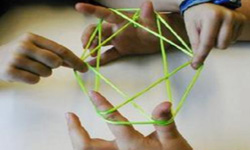

适合团队玩的小游戏
搭桥过河
竞赛方法：每队派6人上场（3男3女），赛道两头各一组，每组分三人自由组合，起点组手持四块“小地毯”，由第一名队员向前搭放“小地毯”（报纸或者毛巾布等），第三个队员不断地把身后的“小地毯”传给第一个队员，三人踩着“小地毯”前进30米，其距离为30米（以一篮球场宽为准，来回），要求脚不能触地，绕过障碍物回到起点，待三人全部过界后另一组将接过“地毯”以同样的方式往回走，最先到达起点的为胜。按时间记名次。
竞赛规则：（1）参赛队队员在起点线外准备。待一组队员全部到达终点时另一组才能开始接力。（2）比赛过程中只要有脚触地的情况，均视为犯规。并按触地次数对比赛用时给与增加。
链接加速
竞赛方法：参加游戏者4人一组，后边的人左手抬起前边的人的左腿，右手搭在前边的人的右肩形成小火车，最后一名同学也要单脚跳步前进，不能双脚着地。场地上划好起跑线和终点线，其距离为30米（以一篮球场宽为准，来回），游戏开始时，各队从起跑线出发，跳步前进，绕过障碍物回到起点，最先到达起点的为胜。按时间记名次。
竞赛规则：（1）游戏过程中队员必须跳步前进，不允许松手（一直保持抬起前边的人的左腿），以防止出现断裂现象，队伍断裂必须重新组织好，从起点重新开始游戏。如果不重新组织，继续前进，则成绩视为无效，记为0分；（2）以各队最后一名同学通过终点线为准；（3）比赛过程中，参赛队必须在规定的赛道进行比赛，不许乱道，犯规一次扣时2秒，依次累加。